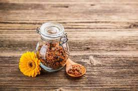
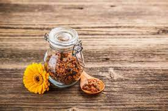

Establecimiento Tango S.R.L
Te mostramos lo que hacemos
Mantenemos nuestras colmenas en diferentes áreas totalmente naturales ubicadas en el delta del río Paraná. Debido a eso, producimos miel orgánica y contamos con una planta de extracción aprobada para su cumplimiento.
Controlamos constantemente la calidad de nuestra miel en todos los niveles. La prueba es, entre otras cosas, cientos de clientes satisfechos y fieles a nuestra empresa.
¿Por qué consumir nuestros productos?
La miel, al ser un endulzante natural no procesado químicamente, es un endulzante de fácil digestión y aporta mucha energía al cuerpo humano.
Los productos derivados de la colmena como el pólen, propóleo y la jalea real contienen activos necesarios para la dieta humana.
Las abejas han desarrollado fuertes mecanismos de defensa para sus colmenas mediante el desarrollo de productos naturales y ese mismo principio de equilibrio se traduce en un impacto positivo en la salud del ser humano.
 
